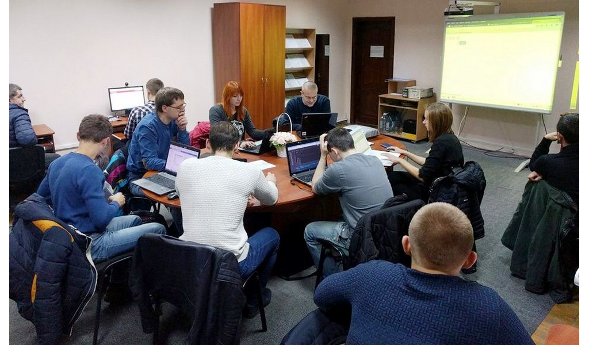

|  | WOW Teachers – це всеукраїнський соціально-освітній проект з безкоштовного навчання вчителів інформатики та старшокласників основам web-розробки. Яка мета проекту? Стратегічна мета проекту – дати поштовх до розвитку шкільної ІТ-освіти “знизу”, зокрема підвищити рівень викладання інформатики у школах, допомогти вчителям та школярам подолати так званий “страх перед технологіями”, розвіяти міф про те, що ІТ це щось надзвичайно складне і тим самим стимулювати дітей обирати ІТ в якості майбутньої професії. Тактична мета проекту – якісно підготувати вчителів інформатики викладати корисний, практичний та затребуваний матеріал школярам, а також мотивувати перепідготованих вчителів поділитися цими знаннями із максимальною кількістю школярів. |